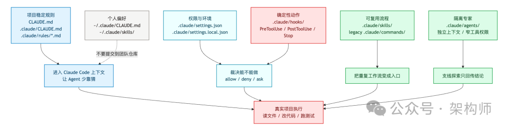
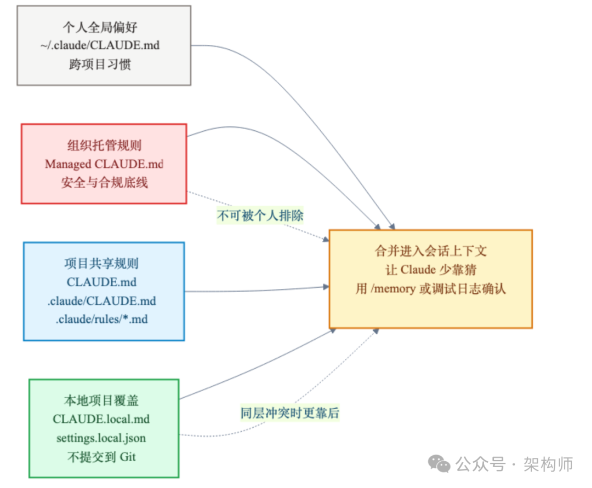
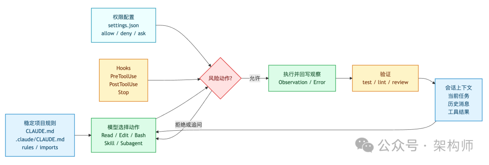
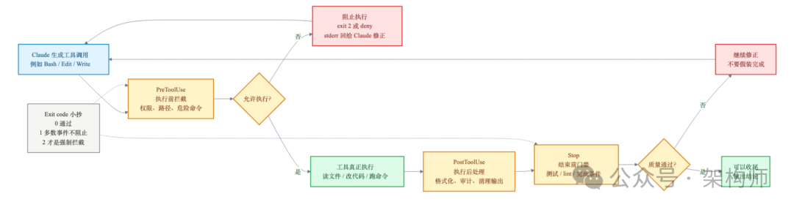
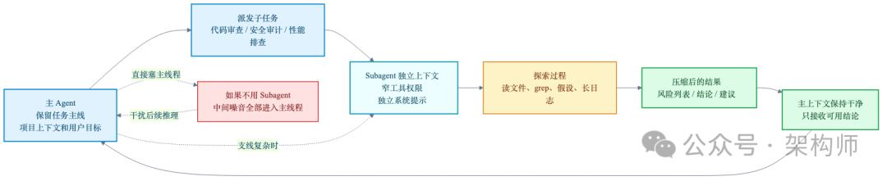

.claude/ 文件夹配置分层体系：规则/权限/动作/流程四层各归各位
来源：微信公众号 归档日期：2026-04-24 抓取状态：成功 原文字符：24524｜配图：7 张
摘要速览
大多数人把 .claude/ 当"提示词垃圾桶"，把所有东西塞进 CLAUDE.md，导致 Agent 行为不可控、缓存命中差、个人偏好污染团队配置——本文把四层责任切清楚。
核心内容
- 四层分离原则：CLAUDE.md（规则/应该做什么）→ settings.json（权限/允许做什么）→ hooks（确定性动作/做了之后自动发生什么）→ commands/skills/agents（可复用流程/专家角色）
- CLAUDE.md 写什么：只放"每次都值得带上"的稳定常驻规则——启动命令、架构边界、目录职责、测试方式、危险区；控制在 100 行以内；动态内容/个人偏好/临时状态一律不放
- settings.json 写什么：硬性权限边界，deny 优先——
.env文件、破坏性命令（rm -rf）、生产部署必须明确 deny；CLAUDE.md 写"不要读.env"只是软约束，settings.json 的 deny 才是真正的门 - hooks exit code 陷阱：
exit 1不阻止执行（非阻塞错误），只有exit 2才是真正的安全拦截门；大多数"安全 hook"因用错 exit code 形同虚设 - 两个 .claude/ 层级：项目级
<project-root>/.claude/（团队共享，提交 Git）vs 用户级~/.claude/（个人偏好，不提交）；CLAUDE.md 加载优先级：CLAUDE.local.md > 项目 CLAUDE.md > 用户 CLAUDE.md > 组织托管策略 - 能机器验证的别写进 CLAUDE.md：测试、lint、CI、hooks 能约束的规则，不要只靠模型自觉
可执行启发
（待补充）
我的想法
（待补充——1. SXL 当前 CLAUDE.md 是否有"把动态状态塞进稳定前缀"的问题，是否影响了 Prompt Cache 命中率？2. 工作域的危险命令拦截（git push --force、DROP TABLE 等）是否已经用 exit 2 做了正确实现？）
为什么有用
SXL 当前 CLAUDE.md 承担了大量职责，理解这个分层可以把"模型自觉遵守的"和"系统强制执行的"分开——特别是 hooks exit 2 这个细节，对 SXL 工作域的危险命令拦截直接适用。
具体步骤（建立 .claude/ 配置的优先顺序）
- 先写 CLAUDE.md：启动命令、架构边界、危险区，100 行以内
- 配 settings.json deny 列表：
.env、rm -rf *、生产部署命令 - 写安全 hook（PreToolUse + exit 2 拦截危险命令）
- PostToolUse hook 自动格式化（Prettier/gofmt）
- 把重复工作流提取为 skills/commands
- 需要独立上下文的专家角色提取为 agents
适用 / 不适用场景
- 适用：团队协作项目、生产级 Agent 配置、需要约束危险操作的场景
- 不适用：一次性脚本、个人实验性项目（过度配置反而拖慢速度）
原文：架构师
今天来聊一个大家可能天天见，但不一定真正用好的东西：CLAUDE.md 和 .claude/。
.claude/ 是什么
它更像一张给 Agent 的项目工作台——左边放稳定规则，中间放权限和工具边界，右边放可复用流程。
不是让 Claude 变聪明，是让它别走错路。
两个 .claude/ 层级
| 层面 | 路径 | 作用 |
|---|---|---|
| 项目级 | <project-root>/.claude/ | 团队共享规则、权限、hooks、skills、agents，通常提交到 Git |
| 用户级 | ~/.claude/ | 个人偏好、跨项目通用 CLAUDE.md、个人 skills/agents、会话历史 |
CLAUDE.md 加载优先级（高到低）：
- CLAUDE.local.md（个人项目覆盖，gitignored）
- ./CLAUDE.md（项目根目录，提交到 Git）
- ~/.claude/CLAUDE.md（用户全局偏好）
- 组织级托管策略（企业部署，不可覆盖）
CLAUDE.md 写什么
控制在 100 行以内（超过后 Claude 对后面指令遵从度下降）。只放：
- 启动命令（
npm run dev、npm run test等） - 架构边界（技术栈、目录职责）
- 代码规范（请求验证方式、日志库）
- 危险区（不要编辑 migrations、测试用本地 DB 不用 mock 等）
不放：当前 issue 状态、时间戳随机 ID、完整接口文档、个人偏好、临时规则。
settings.json 配置示例
{
"$schema": "https://json.schemastore.org/claude-code-settings.json",
"permissions": {
"allow": [
"Bash(npm run *)",
"Bash(git status)",
"Bash(git diff *)",
"Read",
"Write",
"Edit"
],
"deny": [
"Bash(rm -rf *)",
"Bash(curl *)",
"Read(./.env)",
"Read(./.env.*)"
]
}
}不在两个列表的命令：Claude 执行前先问用户（中间地带，有意设计）。
hooks exit code 关键细节
| Exit Code | 含义 | 效果 |
|---|---|---|
| exit 0 | 成功 | 继续执行 |
| exit 1 | 错误但不阻止 | 工作流继续（最常见的错误写法！） |
| exit 2 | 阻止 | 真正拦住执行，stderr 发回给 Claude 做自我修正 |
安全 hook 示例（PreToolUse + exit 2）：
#!/usr/bin/env bash
set -euo pipefail
payload="$(cat)"
command="$(printf '%s' "$payload" | jq -r '.tool_input.command // empty')"
case "$command" in
*"rm -rf /"*|*"git push --force main"*|*"DROP TABLE"*)
printf '%s\n' "Blocked dangerous command: $command" >&2
exit 2
;;
esac
exit 0hooks 其他用途
- PostToolUse 自动格式化：Write/Edit 后自动跑 Prettier/gofmt，不用在 CLAUDE.md 里千叮万嘱
- Stop hook 运行最小测试集：Claude 准备结束时自动跑测试，确保不留破坏
skills 和 agents 的定位
- skills/commands：重复工作流（代码审查、修 issue、安全检查）——不要当提示词收藏夹
- agents：需要独立上下文的专家角色（代码审查、安全审计）——核心价值是"上下文隔离"，不是"凑多 Agent 团队"
核心链路
项目规则（CLAUDE.md）→ 权限配置（settings.json）→ 拦截验证（hooks）→ 工具调用 → 结果回到会话
这是从"会聊天"走向"能在项目里干活"的差别。
原文沉淀
目录
- 太长不看版
- 从哪些方面来下手？
- .claude/ 到底是个什么东西
- 两个 .claude/，不是一个
- 1.
CLAUDE.local.md（个人项目覆盖，gitignored） - 2.
./CLAUDE.md（项目根目录，提交到 Git） - 3.
~/.claude/CLAUDE.md（用户全局偏好） - 4. 组织级托管策略（企业部署的 IT 策略，不可覆盖）
- CLAUDE.md 放项目常识，不放百科全书
- 关于 .claude/rules/ 的真实情况
- 不该放什么：临时状态、长文档、个人偏好
- settings.json 放权限边界
- hooks 放确定性动作
- hooks 还能做什么
- 第四层：commands 和 skills 放可复用流程
- 从 commands 到 skills：不只是更长的 prompt
- 第五层：agents 放隔离上下文，不是凑热闹
- 团队配置和个人配置，要分开
- 完整的文件树
- 如果从零开始
- 第一步：先写一个短的 CLAUDE.md
- 第二步：补一个保守的 settings.json
- 第三步：加一两个 hooks
- 第四步：沉淀高频 commands 或 skills
- 第五步：等支线任务真的变重，再加 agents
- Agent系列
- 参考资料
- 引用链接
- 因公众号更改推送规则，请点“在看”并加“星标”第一时间获取精彩技术分享
- ·END·
- 架构师
#
架构师（JiaGouX）
我们都是架构师！ 架构未来，你来不来？
今天来聊一个大家可能天天见，但不一定真正用好的东西：
CLAUDE.md 和 .claude/。
如果你已经用过 Claude Code，大概率见过它们。可能是 /init 自动生成过一个 CLAUDE.md，也可能是在项目根目录下看到过 .claude/settings.json、.claude/commands/、.claude/agents/ 这些东西。
但很多人对它们的用法，仍然停在一个很模糊的印象里：
"这不就是 Claude 的配置吗？"
我以前也差不多这么看。最近连着梳理 Agent 最小闭环、Harness、上下文管理、Prompt Caching，回头再看这堆文件，才慢慢觉得它们没那么简单。
这些文件不是给 Claude "加魔法"的。
它们更像是在回答一个很朴素的工程问题：
项目里有没有一套东西，能让 Agent 少靠猜。
少猜这个项目怎么跑。少猜哪些目录不能碰。少猜团队代码风格是什么。少猜出了错该怎么验证。少猜什么动作是危险动作。
把前面几篇连起来看会更清楚：Agent 最小闭环讲的是模型怎么动起来；Harness 讲的是模型外面的运行系统；上下文管理讲的是什么该留、什么该丢；Prompt Caching 讲的是稳定前缀和动态尾部怎么分层。
那今天这篇，就把这些东西落回一个最具体的问题：
一个普通项目里，.claude/ 文件夹到底应该放什么？
先说我自己的理解：
它不该是第二个文档站，也不该是提示词垃圾桶。
它更像一张给 Agent 的项目工作台——左边放稳定规则，中间放权限和工具边界，右边放可复用流程。
太长不看版
- •
CLAUDE.md先放最稳定、最高频、最影响行为的项目规则：命令、架构边界、目录职责、测试方式、危险区。
- •
.claude/CLAUDE.md和.claude/rules/*.md在 2.1.88 源码里仍然是项目记忆加载路径；官方文档更强调CLAUDE.md、导入和/memory视图。写生产配置时，以当前版本实际加载结果为准。
- •
.claude/settings.json放权限边界：哪些命令能跑，哪些文件不能读，哪些动作必须先拦住。
- •
.claude/hooks/放确定性动作：危险命令拦截、写后格式化、结束前测试。提示词只能提醒，hooks 能真正执行。
- •
.claude/commands/或 skills 放重复工作流：代码审查、修 issue、生成发布说明、安全检查。不要把它当提示词收藏夹。
- •
.claude/agents/放需要独立上下文的专家角色：代码审查、安全审计、性能排查。重点是隔离中间过程，不是凑"多 Agent 团队"。
- • 个人偏好放
~/.claude/或本地配置，团队契约放项目仓库。别把自己的习惯提交成全队规则。
- • 还有一条我自己踩过坑才想明白的：能用测试、权限、hook 和 CI 约束的东西，别只写在
CLAUDE.md里指望模型自觉。
从哪些方面来下手？
整理的时候，Akshay Pachaar 那篇 Anatomy of the .claude/ folder 我前后翻了好几遍。
但光看文章总觉得还差一口气——知道目录里有什么文件，不等于知道自己项目里该先放什么、后放什么、哪些可以先不管。我更想搞清楚的是背后的分层逻辑。
所以这次多花了点时间，重点看了三个方面：
- • 官方文档：Claude Code 的 memory、settings、hooks、slash commands、skills、subagents。
- • 本地源码：Claude Code 2.1.88 源码，重点看
src/utils/claudemd.ts、src/skills/loadSkillsDir.ts、src/utils/hooks.ts和 agent 相关实现。
- • 前面系列文章：Claude Code 源码、长任务 Runtime、Harness、上下文管理、Prompt Caching、Claude Code 自动化这几条线。
核完以后，有几条边界我觉得值得先摆出来：
- • 官方文档写得很明确：
CLAUDE.md和CLAUDE.local.md会作为 memory 文件加载，@path可以导入其他文件。
- • 2.1.88 源码里的
src/utils/claudemd.ts仍然会查CLAUDE.md、.claude/CLAUDE.md和.claude/rules/*.md，还会处理CLAUDE.local.md。
- • 官方文档和源码都能看到：
settings.json是权限、环境变量、工具行为这层配置，不是写项目知识的地方。
- • hooks 的强制拦截要靠
exit 2或结构化 JSON 决策。普通exit 1在多数 hook 事件里只是非阻塞错误。
- • custom commands 已经向 skills 收敛。源码里
loadSkillsDir.ts仍然保留 legacy/commands/loader，但/skills/<name>/SKILL.md才是更完整的能力包形态。
- • subagent 的核心价值不是"多几个角色"，而是独立上下文、独立工具权限，以及把支线探索从主上下文里隔出去。
下面这张图，是我理解 .claude/ 时最想先放在脑子里的版本。

这张图的重点不是目录齐全。
我自己看这张图最大的感受是分层：规则归规则，权限归权限，动作归动作，流程归流程，个人偏好别混进团队契约。
我自己一开始就是把这几层搅在一起，后来才慢慢拆清楚的。
.claude/ 到底是个什么东西
有人把 .claude/ 叫"Claude 的大脑"，挺形象的。不过我自己用下来，觉得它没那么神秘。
.claude/ 不会让模型变聪明。模型的推理能力不在这个目录里。
我更愿意把它想成一个项目里的交接台。
一个新同事入职，你不会只跟他说一句"好好写代码"。你大概率会告诉他：
- • 本地怎么启动；
- • 测试怎么跑；
- • 哪些目录归哪个模块；
- • 哪些文件不要随便动；
- • API 改了要补哪些测试；
- • 提 PR 前要做哪些检查；
- • 数据库、密钥、生产环境这些地方要格外小心。
这些话，如果只在口头说一次，很快就会丢。
写进 README，给人看是有用的。 写进 CI，给机器验是有用的。 写进 CLAUDE.md、settings.json、hooks、commands、skills、agents，给 Agent 用也是有用的。
这就是 .claude/ 的位置。
它把"资深工程师心里默认知道的项目规则"，翻译成 Agent 每次进仓库都能读到、能调用、能被约束的工程资产。
不是让 Claude 变聪明，是让它别走错路。
两个 .claude/，不是一个
很多教程一上来就讲项目根目录的 .claude/，容易让人以为只有一个。
实际上有两个层面：
| 层面 | 路径 | 作用 |
|---|---|---|
| 项目级 | <project-root>/.claude/ | 团队共享的规则、权限、hooks、skills、agents，通常提交到 Git |
| 用户级 | ~/.claude/ | 个人偏好、跨项目通用的 CLAUDE.md、个人 skills/agents、会话历史 |

图：CLAUDE.md 加载优先级
这张图画得很清楚。Claude Code 启动时，会从多个层级合并配置，优先级从高到低大致是：
1. CLAUDE.local.md（个人项目覆盖，gitignored）
2. ./CLAUDE.md（项目根目录，提交到 Git）
3. ~/.claude/CLAUDE.md（用户全局偏好）
4. 组织级托管策略（企业部署的 IT 策略，不可覆盖）
最后合并成一份系统提示词进入会话。
这个加载顺序本身不复杂，但知道以后能省很多排查时间。比如我有一次在 ~/.claude/CLAUDE.md 里写了"默认用中文回复"，结果发现在某个英文项目里 Claude 也开始说中文了——后来才反应过来，项目级的 CLAUDE.md 优先级更高，但如果它没有明确覆盖语言偏好，用户级的就会漏进来。
搞清楚这个分层，后面很多配置决策就顺了。
CLAUDE.md 放项目常识，不放百科全书
如果只做一件事，我会先做 CLAUDE.md。
它是最高杠杆文件。原文作者 Akshay 说的那句"Highest-leverage file"，我自己用下来也是这个感受。
但这里最容易写坏。
不少团队一开始会把它写成大杂烩：产品背景、接口文档、历史方案、所有编码规范、长篇方法论，全塞进去。
看起来很认真，实际对 Agent 不一定好。
前面写 Prompt Caching 时聊过一个点：Claude Code 会在会话开始时加载项目层上下文。这些内容会进入系统提示的稳定前缀区域——正是 KV Cache 最想命中的那一段。越是常驻前缀，越要稳定、干净、短。
你把不该放的东西塞进去，不仅浪费上下文窗口，还可能破坏缓存命中。
这里再说一个容易忽略的事。Akshay 原文建议 CLAUDE.md 控制在 200 行以内，理由是超过这个长度"Claude 对指令的遵从度反而会下降"。我自己也有类似感受——文件越长，写在后面的规则越容易被"遗忘"。这倒也不奇怪，跟人一样，交代事情太多了，后面的就顾不上了。
所以 CLAUDE.md 更适合放"每次都值得带上"的东西。
我会优先放这几类：
# Project: Acme API
## Commands
- npm run dev: start local server
- npm run test: run unit tests
- npm run lint: run lint and format checks
- npm run build: production build
## Architecture
- Express REST API on Node 20
- PostgreSQL through Prisma
- Route handlers live in src/handlers
- Shared types live in src/types
## Conventions
- Validate request bodies with zod
- Return { data, error } from handlers
- Use src/lib/logger.ts for logs
- Never expose stack traces to clients
## Watch out
- Tests use a local database, not mocks
- Run npm run db:test:reset before integration tests
- Do not edit migrations unless the task explicitly requires it这份文件不需要写得很漂亮。
它要解决的是"Claude 一进来就别走错路"。
对小项目来说，几十行就够。对稍大的项目，我也会尽量先控制在 100 行以内。
如果真的有很多规则，可以拆成外部文档，再用官方支持的 @path/to/file 导入。
比如：
# Project Memory
@docs/architecture.md
@docs/testing.md
@docs/security.md关于 .claude/rules/ 的真实情况
这里要补一个我在核对时特别花了时间的边界。
社区里流传较广的一个说法是：.claude/rules/ 目录下的 .md 文件会自动加载，而且支持 YAML frontmatter 里的 paths 字段做路径限定——只有当 Claude 编辑匹配路径的文件时才生效。
这个说法不是完全没依据。我在 2.1.88 源码的 src/utils/claudemd.ts 里确实看到了 .claude/rules/*.md 的读取逻辑，claudeMdExcludes 的示例里也出现了 .claude/rules/**。Akshay 原文也详细描述了这个特性。
但官方面向用户的文档更常强调 CLAUDE.md、CLAUDE.local.md、@path 导入和 /memory 管理视图。
所以如果团队要把规则模块化，用规则文件或导入文件都可以，但我自己会用 /memory 或调试日志确认一下当前版本真的加载到了。之前就遇到过一次，写了 rules 文件，结果 Claude 根本没读到，白忙半天。
做 Agent 配置这种事，"我在某篇教程里看过"不太够用。真正要进仓库的规则，还是得能被团队确认、能被版本管理、能被回滚。
不该放什么：临时状态、长文档、个人偏好
CLAUDE.md 该放什么，反过来看更清楚。
我自己踩过几次坑以后，一般不往里放这些：
- • 今天正在做哪个 issue；
- • 当前任务进度；
- • 会变化的时间戳、随机 ID、环境信息；
- • 完整接口文档；
- • 长篇产品背景；
- • formatter 已经能表达的格式细节；
- • 某个工程师自己的偏好；
- • 还没被团队确认的临时规则。
原因不复杂。
第一，这些东西会让常驻上下文变重。长任务里，每一轮都带着一堆过期信息，迟早会干扰当前任务。
第二，动态内容会破坏稳定前缀。前面写 Prompt Caching 时说过，缓存命中靠的是前缀稳定。你把"今天日期""当前进度""临时任务状态"塞进稳定文件里，等于自己把最该稳定的那层弄脏。
第三，个人偏好进仓库，会变成团队协作问题。你觉得"默认用中文"很合理，但可能队友那边 Claude 的行为就因此变了。
所以我更倾向于这样分：
- • 项目长期规则：放
CLAUDE.md
- • 当前任务状态：放当前会话、issue、任务文档或 todo
- • 个人偏好：放
~/.claude/CLAUDE.md或CLAUDE.local.md
- • 能机器验证的规则：放测试、lint、CI、hook
这背后其实是一条从上下文管理那篇延续下来的感受：上下文不是越多越好，关键是每层各放各的东西。
如果压成一张执行链路的图，大概是这样：

这张图里我最在意的不是 Claude 会调用多少工具。
而是这条链路：项目规则进入上下文，权限配置参与裁决，hooks 参与拦截和验证，最后工具结果再回到会话里。
说直白点，这就是从"会聊天"走向"能在项目里干活"的差别。
settings.json 放权限边界
CLAUDE.md 解决"应该怎么做"。
settings.json 解决"允许做什么"。
这两件事不能混。
你可以在 CLAUDE.md 里写"不要读取 .env"，但模型遵不遵守，说白了全靠自觉。我之前就吃过这个亏——写了"不要碰 .env"，但有一次 Claude 在 debug 的时候还是顺手读了。后来改成在 settings.json 里直接 deny，才真正堵住。
一个最小配置可以像这样：
{
"$schema": "https://json.schemastore.org/claude-code-settings.json",
"permissions": {
"allow": [
"Bash(npm run *)",
"Bash(git status)",
"Bash(git diff *)",
"Read",
"Write",
"Edit"
],
"deny": [
"Bash(rm -rf *)",
"Bash(curl *)",
"Read(./.env)",
"Read(./.env.*)"
]
}
}这里聊几个实践中容易踩的点。
allow 别一开始就开太大。先允许读文件、搜索、看 diff、跑测试就够了。写文件可以开，但删除、部署、数据库迁移、网络下载这类能力要慎重。
deny 倒是建议认真写。.env、密钥目录、生产部署命令、破坏性命令，至少先拦住。
那不在两个列表里的命令怎么办？Claude 会在执行前先问你。这个"中间地带"是有意设计的——不需要提前列举所有可能的命令，只要管住两头就行。
还有一个细节：$schema 字段看起来不重要，但加上以后在 VS Code 或 Cursor 里能自动补全和校验配置。Akshay 原文特意提了这个，我试过确实好用，推荐加上。
前面写 Agent 最小闭环时我聊过一个感受：Agent 的能力不是越大越好，能力要跟验证和回滚一起长。
权限配置就是这个感受在项目里的落点。
团队连测试和回滚都没补好的时候，就先给 Agent 开很大的权限，短期确实爽，长期就容易变成"自动制造技术债"。
hooks 放确定性动作
到这一步开始有意思了。
CLAUDE.md 是软约束——"你应该这样做"，但模型有时候会忘。settings.json 是权限边界——"你不能做那个"，硬卡。
hooks 再往前走一步，管的不是"能不能做"，而是"做了以后自动发生什么"。
比如：
- • 工具执行前，检查命令是否危险；
- • 文件写完后，自动跑 formatter；
- • Claude 准备结束时，跑一组最小测试；
- • 用户提交提示词时，补充必要上下文或拦截不合规请求。

图：Claude Hooks 生命周期
这张图最值得记住的不是流程，而是 exit code 的含义：
| Exit Code | 含义 | 效果 |
|---|---|---|
exit 0 | 成功 | 继续执行 |
exit 1 | 错误 | 但不阻止，工作流继续 |
exit 2 | 阻止 | 真正拦住执行 ，stderr 发回给 Claude 做自我修正 |
很多安全 hook 写错就错在这里。发现危险命令后 exit 1，看起来报错了，其实根本没拦住。Akshay 原文管这叫"最常见的错误"，我翻了源码验过，确实只有 exit 2 才是真正的安全门。
一个简化版 Bash 防火墙可以这样写：
#!/usr/bin/env bash
set -euo pipefail
payload="$(cat)"
command="$(printf '%s' "$payload" | jq -r '.tool_input.command // empty')"
case "$command" in
*"rm -rf /"*|*"git push --force main"*|*"DROP TABLE"*)
printf '%s\n' "Blocked dangerous command: $command" >&2
exit 2
;;
esac
exit 0这里真正重要的不是这几条规则，而是职责拆开了：
模型提出动作。 系统独立裁决。 危险动作被确定性拦截。
这和我们前面写 Harness 时的判断一致：生产级 Agent 的差距，很多时候不在模型会不会说，而在动作能不能被看见、被约束、被验证。
hooks 还能做什么
除了安全拦截，hooks 还有几个实用场景：
PostToolUse 自动格式化：Claude 改完文件后自动跑 Prettier 或 gofmt。不用在 CLAUDE.md 里千叮万嘱"请遵守代码风格"了，系统自动帮你收拾。
{
"hooks": {
"PostToolUse": [
{
"matcher": "Write|Edit|MultiEdit",
"hooks": [
{
"type": "command",
"command": "jq -r '.tool_input.file_path' | xargs npx prettier --write 2>/dev/null"
}
]
}
]
}
}Stop 门禁：Claude 准备说"搞定了"之前，先跑一次测试。测试不过就 exit 2 打回去。这里有个坑 Akshay 原文特意提了：一定要检查 JSON payload 里的 stop_hook_active 标志，不然 hook 拦住 Claude，Claude 重试，hook 又拦，死循环了。第二次尝试得放行。
桌面通知：Claude 干完了给你发个系统通知。macOS 用 osascript，Linux 用 notify-send。放在 ~/.claude/settings.json 里就能跨项目生效。我自己用这个比较多，离开一会儿回来正好看结果。
不过 hooks 也别堆太多。
它跑的是你的系统权限，没有沙箱。写不好也会变成攻击面——比如不检查 JSON 输入就拼进 shell 命令，或者路径没用绝对路径导致被劫持。
还有一个我踩过的坑：hooks 在 subagent 的动作里也会触发。如果你的 hook 比较重，子任务就会变慢，之前一直没想明白为什么 subagent 这么卡，最后发现是 PostToolUse 的 hook 拖慢了。
所以我自己的做法是先加三类就够了：
- •
PreToolUse：只做快速安全判断；
- •
PostToolUse：只做轻量格式化和记录；
- •
Stop：只做最小质量门禁。
复杂测试、完整安全扫描，还是交给明确命令或 CI。
第四层：commands 和 skills 放可复用流程
很多人把 commands 当"提示词收藏夹"用。
我一开始也是这样，后来才发现这个定位低了。
它其实更适合做团队流程入口。
比如：
- • 审查当前分支；
- • 调查并修复某个 issue；
- • 生成发布说明；
- • 做一次安全检查；
- • 按团队格式写 PR 描述。
一个 .claude/commands/review.md 可以长这样：
---
description: Review the current branch before merge.
---
## Changes to review
!`git diff --name-only main...HEAD`
## Detailed diff
!`git diff main...HEAD`
Review the above changes, focus on:
1. correctness bugs
2. missing tests
3. security risks
4. behavior regressions
Give specific, actionable feedback per file.注意那个 ! 反引号语法——它会在 prompt 发给 Claude 之前，先执行 shell 命令并把输出嵌入进去。这不只是"少打几行字"，而是让每次代码审查都从真实的 diff 开始，不靠 Claude 自己去翻文件。
这个文件的价值是让团队每个人触发"代码审查"时，Agent 都按相同的入口、相同的关注点、相同的输出预期来工作。
命令还能接参数。比如一个修 issue 的命令：
---
description: Investigate and fix a GitHub issue
argument-hint: [issue-number]
---
Look up issue #$ARGUMENTS in this repo.
!`gh issue view $ARGUMENTS`
Understand the bug, trace to root cause, fix it, and write a test that catches it.跑 /project:fix-issue 234 就会自动拉取 issue 234 的内容注入到提示里。
从 commands 到 skills：不只是更长的 prompt
现在官方口径里，custom commands 已经向 skills 体系收敛。老的 .claude/commands/ 仍然可用，但 skills 可以带目录、模板、脚本和参考文件，也能在相关场景下被自动加载。
这是什么意思？commands 你得手动输入 /project:review 才会触发。skills 不一样，Claude 可以根据对话上下文自动识别"当前任务匹配这个 skill"，然后主动调用。
一个 skill 的结构是这样的：
.claude/skills/
├── security-review/
│ ├── SKILL.md
│ └── DETAILED_GUIDE.md
└── deploy/
├── SKILL.md
└── templates/
└── release-notes.mdSKILL.md 通过 YAML frontmatter 描述触发条件：
---
name: security-review
description: Comprehensive security audit. Use when reviewing code for
vulnerabilities, before deployments, or when the user mentions security.
allowed-tools: Read, Grep, Glob
---
Analyze the codebase for security vulnerabilities:
1. SQL injection and XSS risks
2. Exposed credentials or secrets
3. Insecure configurations
4. Authentication and authorization gaps
Report findings with severity ratings and specific remediation steps.
Reference @DETAILED_GUIDE.md for our security standards.当你说"帮我审查一下这个 PR 有没有安全问题"，Claude 会匹配到 description，自动加载这个 skill。你也可以显式用 /security-review 调用。
所以更简单的理解是：
- • 很轻的固定入口，用 command；
- • 带模板、脚本、参考资料和复杂步骤的流程，用 skill。
比如：
/project:review 可以是 command。 security-review 更适合做 skill，因为它可能需要检查清单、威胁模型、报告模板和参考资料。
这也接上了之前写 Hermes 和 OpenClaw 时的那条线：skill 不只是"更长的 prompt"，它更像团队经验的 SOP。关键不在文件长不长，而在它有没有生命周期，能不能被更新、验证、删除。
第五层：agents 放隔离上下文，不是凑热闹
.claude/agents/ 很容易被讲成"多 Agent 团队"。
之前写多 Agent 那篇的时候我就有一个感受：多 Agent 的难点不在给模型分几个角色，而在上下文边界怎么切、信息怎么流、系统什么时候停。
Subagent 也是同一个逻辑。说白了就是：把某些支线任务丢到独立上下文里做，主线程只拿结果。

图：Subagent 隔离上下文
这张图说得很清楚。
代码审查、安全审计、性能排查这类任务，通常会产生大量中间过程：读文件、grep、失败假设、临时判断、长日志。
这些东西如果都留在主上下文里，会把后面的工作记忆弄脏。之前写上下文管理那篇的时候就聊过：窗口变大以后，真正卡住 Agent 的往往不是窗口不够大，而是留下来的中间噪音开始帮倒忙。
所以 subagent 的价值，是让探索过程留在子上下文里，主线程只收到压缩后的结论。
一个好的 agent 定义，至少要写清三件事：
- • 什么时候用它；
- • 它能用哪些工具；
- • 它返回什么格式的结果。
---
name: code-reviewer
description: Expert code reviewer. Use PROACTIVELY when reviewing PRs,
checking for bugs, or validating implementations before merging.
model: sonnet
tools: Read, Grep, Glob
---
You are a senior code reviewer with a focus on correctness and maintainability.
When reviewing code:
- Flag bugs, not just style issues
- Suggest specific fixes, not vague improvements
- Check for edge cases and error handling gaps
- Note performance concerns only when they matter at scale注意 tools 字段。security-auditor 只给 Read、Grep、Glob 权限，不给写权限——它的职责是报告风险，不是自动修复。这种权限限制是刻意的。
model 字段也挺实用。只读型 subagent 可以用更便宜更快的模型（比如 Haiku），把 Sonnet 和 Opus 留给真正需要推理深度的主任务。跑过几次就能感觉到成本差距。
我自己越来越觉得，agents 最有价值的地方不是让系统看起来像一家公司，而是让上下文更干净、权限更窄、职责更清楚。
团队配置和个人配置，要分开
再补一个很容易被忽略的边界：项目级 .claude/ 和用户级 ~/.claude/。
简单表格看一下：
| 位置 | 放什么 | 是否提交 |
|---|---|---|
CLAUDE.md | 团队共享的项目规则 | 通常提交 |
CLAUDE.local.md | 个人项目级覆盖 | 不提交（auto-gitignored） |
.claude/CLAUDE.md / .claude/rules/*.md | 项目级补充规则或模块化规则 | 先确认版本加载行为 |
.claude/settings.json | 团队共享的权限和 hooks 配置 | 视团队策略提交 |
.claude/settings.local.json | 本地权限覆盖 | 不提交（auto-gitignored） |
.claude/commands/ | 项目工作流入口 | 通常提交 |
.claude/skills/ | 项目技能包 | 视情况提交 |
.claude/agents/ | 项目专用子代理 | 视情况提交 |
~/.claude/CLAUDE.md | 个人跨项目偏好 | 不提交 |
~/.claude/skills/ / ~/.claude/agents/ | 个人通用技能和代理 | 不提交 |
~/.claude/projects/ | 会话历史和自动记忆 | 不提交 |
说白了就一个判断标准：这是团队契约，还是个人习惯？
团队契约进仓库，个人习惯留本地。
比如"默认用中文沟通""我喜欢先写 plan""我本机某个脚本路径在哪里"，这些都不应该变成团队配置。
反过来，"API 改动必须补 contract test""不要读取 .env""数据库迁移必须人工确认"，这些就应该进入团队契约。
关于 ~/.claude/projects/ 还有一个小知识：Claude Code 会在工作过程中自动给自己记笔记——它发现的命令、观察到的模式、架构洞察。这些笔记跨会话持久化。如果你发现 Claude 似乎"记住"了你从未告诉过它的事情，大概率就是自动记忆在起作用。你可以用 /memory 浏览和编辑它们。
这个边界做好了，团队协作会轻很多。
完整的文件树
把前面聊的全部放到一棵树里：
your-project/
├── CLAUDE.md # 团队指令（提交到 git）
├── CLAUDE.local.md # 个人项目覆盖（gitignored）
│
└── .claude/
├── settings.json # 权限 + hooks 配置（提交）
├── settings.local.json # 个人权限覆盖（gitignored）
│
├── hooks/ # Hook 脚本，被 settings.json 引用
│ ├── bash-firewall.sh # PreToolUse: 拦截危险命令
│ ├── auto-format.sh # PostToolUse: 写后自动格式化
│ └── enforce-tests.sh # Stransform: translateY( 结束前跑测试
│
├── rules/ # 模块化指令文件
│ ├── code-style.md
│ ├── testing.md
│ └── api-conventions.md
│
├── skills/ # 自动触发的工作流
│ ├── security-review/
│ │ ├── SKILL.md
│ │ └── DETAILED_GUIDE.md
│ └── deploy/
│ ├── SKILL.md
│ └── tem)plates/
│ └── release-notes.md
│
├── commands/ # 手动触发的斜杠命令（legacy，仍可用）
│ ├── review.md # → /project:review
│ └── fix-issue.md # → /project:fix-issue
│
└── agents/ # 隔离上下文的专家子代理
├── code-reviewer.md
└── security-auditor.md
~/.claude/
├── CLAUDE.md # 个人全局指令
├── settings.json # 个人全局设置 + hooks
├── skills/ # 个人技能（所有项目可用）
├── agents/ # 个人代理（所有项目可用）
├── commands/ # 个人命令（所有项目可用）
└── projects/ # 会话历史 + 自动记忆不需要一上来就配满。大部分项目用不到这里面的一半。
如果从零开始
如果一个项目今天刚开始用 Claude Code，我不会一上来就把 .claude/ 全家桶配满。
我会按五步走。
第一步：先写一个短的 CLAUDE.md
只写最影响行为的内容：
- • 安装、启动、测试、构建命令；
- • 主要目录职责；
- • 关键架构边界；
- • 错误处理和日志约定；
- • 哪些目录不能随便改；
- • 改完以后怎么验证。
第一版别超过 100 行。
也可以用 /init 让 Claude Code 自动生成一个起始版本，然后自己删减到最精简。自动生成的往往太啰嗦，我每次都要砍掉一大半。
第二步：补一个保守的 settings.json
先允许读、搜索、diff、测试。
再根据项目成熟度开放写文件、跑项目脚本。
高风险动作先 deny。至少拦住 .env 读取和破坏性命令。
第三步：加一两个 hooks
最值得先做的是 Bash 防火墙和 Stop 门禁。
前者拦危险命令。 后者避免 Claude 说"完成了"，但测试根本没跑。
第四步：沉淀高频 commands 或 skills
先从团队每天都做的流程开始，比如 review、fix issue、release notes。
别把所有灵感都做成命令。命令越多维护成本越高。我自己的体会是，一个项目里有 3~5 个高频命令就够了。剩下的要么是临时的（不值得做成命令），要么是复杂的（应该做成 skill）。
第五步：等支线任务真的变重，再加 agents
如果某类任务经常读很多文件、产生很多中间态，又只需要窄权限，那就适合抽 agent。
比如代码审查、安全审计、性能排查。
普通小改动，不需要上 agent。
说实话，95% 的项目前三步就够了。Skills 和 agents 是等真的遇到重复性复杂工作流时才需要的。别为了配置而配置。
Agent系列
最近这组文章，其实一直在讲同一件事，只是切口不同。
《Agent 最小闭环》讲的是：Agent 起步靠 loop，模型看上下文、选工具、拿观察、继续下一轮。
《Agent Harness 综述》讲的是：同一个模型为什么结果差很多，因为模型外面那套系统决定它怎么运行、怎么停、怎么恢复、怎么验证。
《多 Agent 不是虚拟公司》讲的是：多 Agent 的难点不在角色分配，而在上下文边界和信息流。
《1M 上下文不是终点》讲的是：窗口变大以后，真正要比的是工作记忆怎么管理。
《Prompt Caching》讲的是：稳定前缀要稳定，动态内容往后追加，系统别每轮替自己重复付费。
《Google 工程师用 Claude Code 自动化 80%？》那篇里，我也提过一句：CLAUDE.md 先别神化。它不是魔法，但它确实把团队工程纪律变成了 Agent 每次都能读到的运行时上下文。
今天，算是把这些线收回到项目目录里。
.claude/ 不是另一个炫技功能。我更倾向于把它看成 Agent 工程化落地的第一层地基：
- •
CLAUDE.md让 Agent 少猜项目规则；
- •
settings.json让 Agent 的能力有边界；
- • hooks 让关键动作可拦截、可验证；
- • commands 和 skills 让团队流程可复用；
- • agents 让支线探索别污染主上下文；
- •
~/.claude/让个人偏好和团队契约分开。
这几层放对了，Claude Code 才不只是一个"会写代码的聊天框"，而更像一个能进入项目、遵守规则、接受约束、持续改进的工程工具。
写到这里回头看，其实一直在聊同一件事：prompt 当然重要，但比 prompt 更持久的，是项目里那些可维护、可审计、可回滚的工程资产。
写在最后
第一次配 .claude/ 的时候，最容易想复杂。
其实不用一开始就完整。先写短的 CLAUDE.md，再收住权限，再给关键动作加 hooks，再把重复流程做成 command 或 skill，最后才考虑 agents。
这条路听起来慢，但更稳。
真正能长期留下来的，不是某一句神奇提示词，而是项目里沉淀的工程资产：规则、权限、验证、流程、边界。
我自己越来越有一个感觉：AI Coding 接下来比的，可能不只是模型能不能写代码，而是谁能把"让 Agent 正确工作"这件事，变成仓库里可维护、可审计、可回滚的一部分。
.claude/ 就是这件事很小、但很关键的入口。
后面如果有时间，想再聊聊 CLAUDE.md 实际写坏的几种典型模式，以及 hooks 在 CI 流程里怎么配合。如果你在配 .claude/ 的过程中踩过什么坑，欢迎留言聊聊，很多好的工程经验都是从坑里长出来的。
末了，如果有兴趣或者正在手搓 Agent的话，可以看看这个《30分钟手搓 Agent：LLM + Tools + Loop + Memory 跑通最小闭环》或者购买这个课程《为什么你的Agent总是"不听话"？》
参考资料
- • Akshay Pachaar：Anatomy of the
.claude/folder[1]
- • Anthropic Docs：Claude Code memory and
CLAUDE.md[2]
- • Anthropic Docs：Claude Code settings[3]
- • Anthropic Docs：Claude Code hooks[4]
- • Anthropic Docs：Claude Code slash commands[5]
- • Anthropic Docs：Claude Code subagents[6]
- • Claude Code Docs：Claude Code skills[7]
引用链接
[1] Anatomy of the .claude/ folder: https://x.com/akshay_pachaar/status/2035341800739877091 [2] Claude Code memory and CLAUDE.md: https://docs.anthropic.com/en/docs/claude-code/memory [3] Claude Code settings: https://docs.anthropic.com/en/docs/claude-code/settings [4] Claude Code hooks: https://docs.anthropic.com/en/docs/claude-code/hooks [5] Claude Code slash commands: https://docs.anthropic.com/en/docs/claude-code/slash-commands [6] Claude Code subagents: https://docs.anthropic.com/en/docs/claude-code/sub-agents [7] Claude Code skills: https://code.claude.com/docs/en/skills
如喜欢本文，请点击右上角，把文章分享到朋友圈
如有想了解学习的技术点，请留言给若飞安排分享
因公众号更改推送规则，请点“在看”并加“星标”第一时间获取精彩技术分享
·END·
相关阅读：
刚刚，Claude Code“代码泄露”背后：如何重新看 Agent Harness
大家都在讲 Harness，但它到底该怎么理解
模型越来越强，为什么大家却开始重写 Harness
如何让单个 Agent 做长任务不失真：Anthropic 给出了一套更工程化的答案
Claude Code高手的 8 个 Claude Code 实战习惯
别从 README 开始：一个架构师会怎样翻 Codex 仓库
Spec 不是代码的替代品，它是 AI Coding 的上下文管理层
如何让 Agents 自己设计、升级 Agents
OpenAI怎么把开源项目维护做成工作流：Skills、AGENTS.md 和 CI 的一套组合拳
Claude Skills 入门：把“会用 AI”变成“可复制的工程能力”
一套可复制的 Claude Code 配置方案：CLAUDE.md、Rules、Commands、Hooks
Claude Code 最佳实践：把上下文变成生产力（团队可落地版）
把 AI 当成新同事：Agent Coding 的上下文与验证体系
一周写百万行的背后：Cursor长时间运行 Agent 的工程方法论
2026年生活重启指南
我真不敢相信，AI 先加速的是工程师。
扒一扒 Claude Cowork 系统提示词：Anthropic 如何打造数字同事
Cowork 安全架构深度解析：从 Claude Code 到 Cowork，Anthropic 如何把“可控”做成产品
Anthropic官方万字长文：AI Agent评估的系统化方法论
银弹还是枷锁？Claude Agent SDK 的架构真相
Claude Code创始人亲授13条使用技巧
Claude Code 内部工具开源 code-simplifier：终结 AI 屎山代码的终极方案版权申明：内容来源网络，仅供学习研究，版权归原创者所有。如有侵权烦请告知，我们会立即删除并表示歉意。谢谢!
架构师
我们都是架构师！
归属：[[02-输入/按主题/工具与技术/_index|工具与技术]]